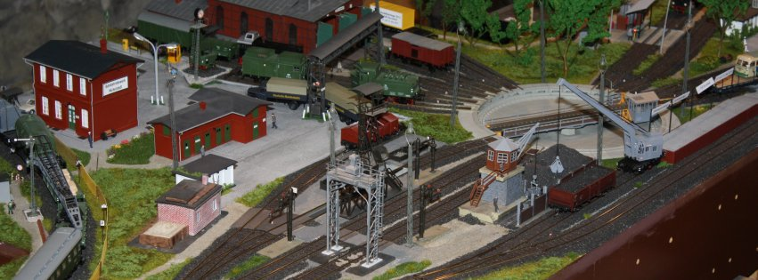

Krümelbahn
KrümelbahnGuten und
Willkommen auf meiner Homepage
Ich freue mich, dass Sie mich gefunden haben.
Auf dieser Seite finden Eisenbahninteressierte vieles zum Thema:
- Eisenbahnen, nicht nur rund um Solingen
- Informationen
- Publikationen (Bücher, Broschüren, Videos)
- Modell- und Modulbau
- digital mit DCC rund um mein Bw Michelstadt
- Modellbahnelektronik - nicht nur digital
- Fahrzeugselbstbau
- Bahnsinniges und Informationen rund um die kleine und große Bahn
- mehr oder weniger wichtige Links
Eine Übersicht über Ausstellungstermine der Vergangenheit gibt es hier.
Interessante Themen werden in meiner Reihe
veröffentlicht.
Einige Projekte sind auf
verfügbar, eine Kurzanleitung zum Umgang mit GitHub gibt es hier:- Informationen
- Publikationen (Bücher, Broschüren, Videos)
- digital mit DCC rund um mein Bw Michelstadt
- Modellbahnelektronik - nicht nur digital
- Fahrzeugselbstbau
.

Bw Michelstadt
© by Michael Zimmermann 2012